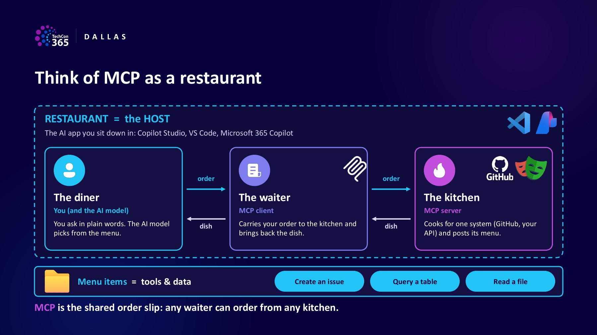

TechCon365 Dallas · Model Context Protocol
To MCP or Not to MCP
What is MCP, how does it work, and where would you use it? The kitchen analogy explains the pieces, followed by examples in the Copilot tools you use.
TechCon365 Dallas November 2–6, 2026 · Dallas, Texas
Session materials: the full 46-slide PDF is available above. The guide below summarizes the talk; demo recordings and server source code are not included. Host capabilities, preview features, and UI details reflect the November 2026 session and may change.
What is MCP?
Model Context Protocol (MCP) is an open standard that lets AI applications connect to tools, data, and other systems. Instead of building a different integration for every AI app, a system can expose capabilities through an MCP server that compatible apps can use.
Think about the difference between asking Copilot to draft an email and asking it to find open opportunities in your CRM. The first uses the model's language skills. The second needs a connection to a system the model cannot reach on its own.
Giving the model sources to read, such as web results and files, is called grounding. MCP-connected tools can let it reach into a system to read a record, create an issue, or update something.
The model is the brain. Search and files are its eyes. Tools are its hands. MCP is the standard connection, not a new model or automatic access to all your data.
Think of MCP as a restaurant
You sit down, ask for something, and get a result without walking into the kitchen yourself. The deck uses that familiar interaction to explain the pieces of MCP.

View the kitchen analogy in the deck (slide 10)
- The restaurant = the host
- The AI application you're using, such as Copilot Studio or VS Code. It's where you ask for help and see the answer.
- The waiter = the MCP client
- The part inside the host that communicates with the server. It carries requests to the kitchen and brings results back.
- The kitchen = the MCP server
- The component that exposes a system's capabilities, such as GitHub or your own API. It publishes what's available and handles the requests.
- A dish on the menu = a tool
- A specific action, such as creating an issue or querying a table. Its definition tells the model what it does and which inputs it needs.
MCP is the shared order slip. A compatible client and server speak the same language. That's why the deck also calls it “USB-C for AI”: a common connection instead of custom wiring for every app-and-tool pairing.
Follow one order
Say you ask: “Create an issue for the login bug.” Here's the breakdown from the deck:
- Discover: read the menu. The client gets the available tool
definitions, including
create_issueand the details it requires. - Choose: pick a dish. The model selects the tool and fills in inputs such as the repository and issue title. The client sends the request.
- Authorize: check the ID. The server checks the identity and permissions before carrying out the action. Sign-in and approval behavior depend on the host and server.
- Execute: cook and plate. The server calls the underlying system, such as GitHub's API. A result or clear error comes back through the client to your conversation.
The model chooses what to request; the server and underlying system do the actual work. MCP standardizes the conversation between them.
What's on the menu?
The “context” in Model Context Protocol includes more than actions. The deck breaks it into three core pieces:
- Tools are the dishes. What the model can ask to do, such as create an issue or query a table.
- Resources are the recipe book. Data and context the application can read, such as files and documentation.
- Prompts are the combo meals. Ready-made request templates offered by a server, such as a starting point for summarizing a pull request.
What about elicitation, MCP Apps, and tasks?
The deck also introduces some kitchen extras: elicitation lets the server ask for more input during a task (“Which of these repositories?”); MCP Apps bring interactive screens into the conversation; and tasks support work that continues in the background.
Not every server offers every feature, and not every host supports the whole menu. Check the combination you're using rather than assuming MCP support means feature parity.
Where is the kitchen?
An MCP server isn't necessarily a separate machine. It can run locally or remotely. The connection route is called the transport.
- Local, on your computer. The server runs as a process
on your computer. A common transport is
stdio(standard input/output): the client communicates directly with that process. - Remote, over the network. The client reaches a server over the network using Streamable HTTP. A hosted server can serve multiple clients.
The Copilot Studio examples in the deck use remote servers. Developer tools can offer local and remote options; the host determines which connections it supports.
Where would I use MCP?
Start with the place you're already working and the system you need to reach. The deck shows the same idea across several experiences:
- Copilot Studio: give an agent tools
- Connect a remote MCP server so an agent can work with another system. The session's Dataverse example reads and writes data through agent tools.
- Copilot Cowork: use a plugin
- A plugin can package skills with a connection to an MCP server. You use the plugin's capabilities without configuring every tool yourself. Watch the Miro plugin example from the Cowork session.
- GitHub Copilot in VS Code: bring tools into development
- Connect a server in your coding environment so the conversation can use capabilities beyond the code in your workspace.
- GitHub Copilot CLI: work from the terminal
- Use an MCP server in a terminal-based workflow. The deck shows the same Dataverse endpoint used from different hosts, each with its own client configuration.
- Microsoft 365 Copilot: extend a declarative agent
- The deck's declarative-agent example connects a remote server through an MCP plugin manifest. That is a specific extension model, not automatic MCP access in every Copilot conversation.
You can connect the same server to more than one host. Check the setup, sign-in, permissions, and supported features in each one.
So, MCP or a connector?
MCP is useful when you want to reuse a server's capabilities across compatible AI hosts, a vendor already offers a server, or the available tool set evolves. A connector can be the better fit when you need Power Automate, Power Apps, or Logic Apps integration, or want to configure individual actions explicitly.
Why does Copilot Studio mention both?
In the standard-harness onboarding flow shown in the deck, Copilot Studio creates
a custom connector with an InvokeServer action. That connector is the
delivery window; the MCP server supplies the tools behind it.
That's a Copilot Studio integration detail, not the definition of MCP. Other hosts connect to MCP servers without Power Platform connectors.
MCP doesn't replace permissions or make a server trustworthy by itself. Use trusted servers and only the access the task needs. The full deck has additional guidance on controls and production readiness.